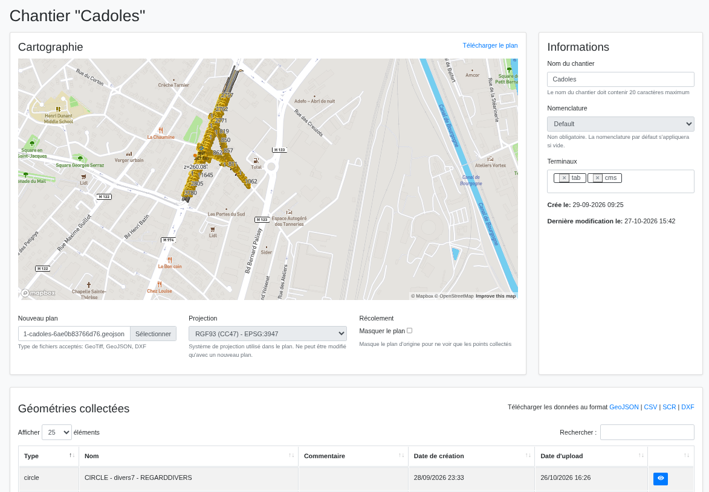
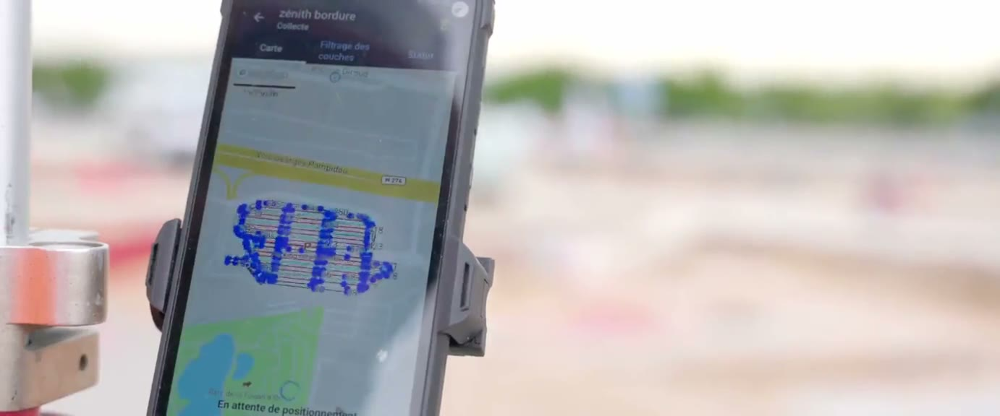
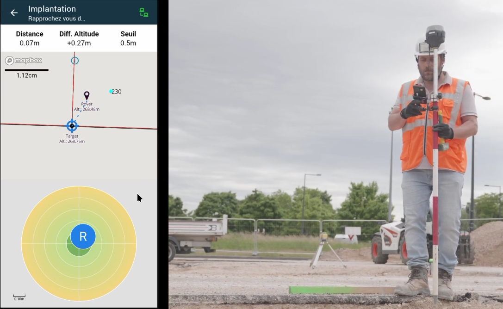
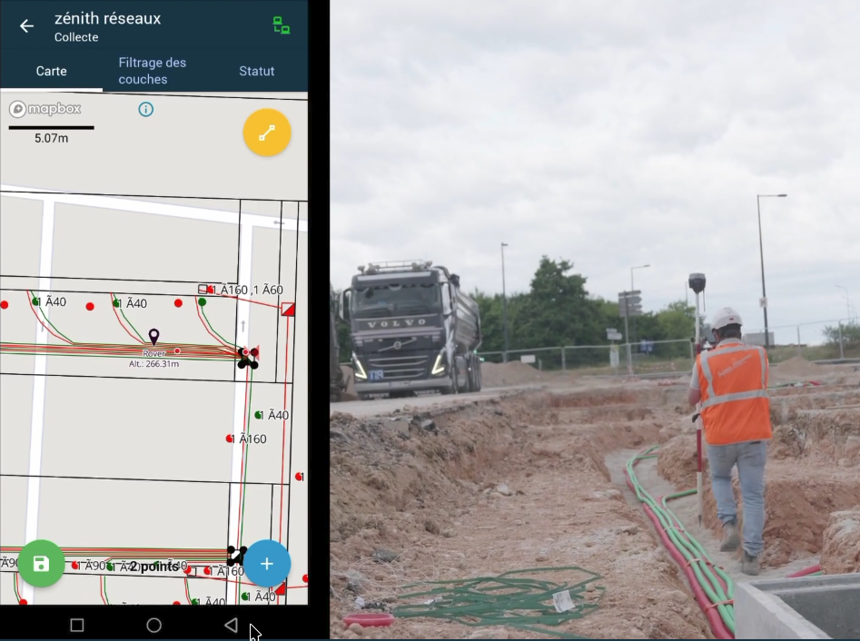
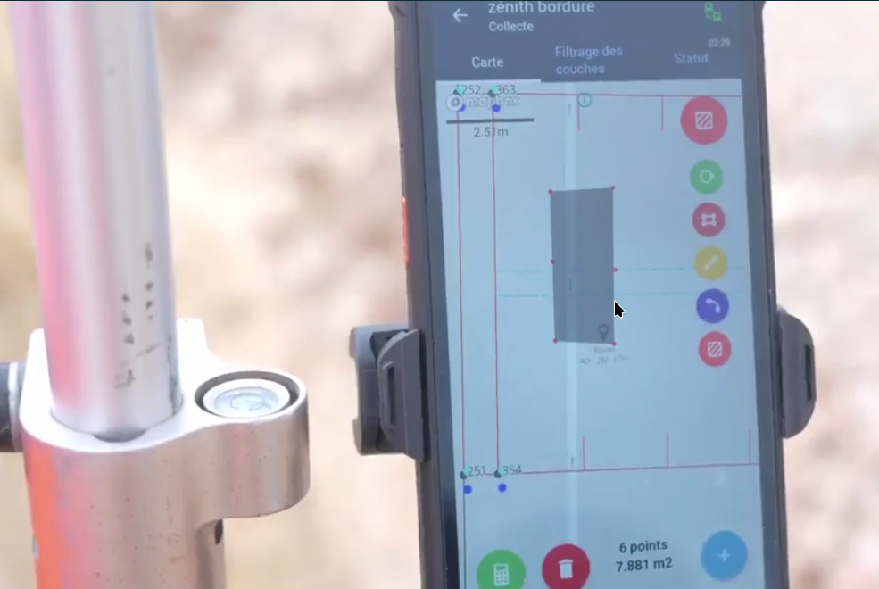
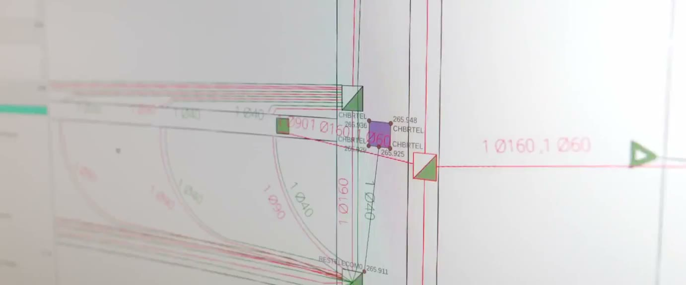
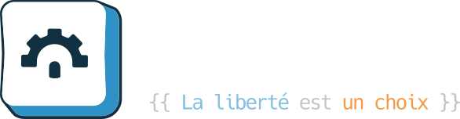

Donnez de l’autonomie à vos chantiers !
Du TP au paysagisme, du gros œuvre à l’aménagement extérieur : un seul kit GPS RTK pour simplifier vos chantiers et gagner en précision au quotidien.
- Technologie GPS RTK
- Précision cm
- Usage simple
LaCanne
Un workflow complet conçu pour le terrain au quotidien et en temps réel grâce à la synchronisation des données entre le bureau et le terrain.






-
Intégrer
Intégrez votre plan pour préparer votre chantier avec les informations nécessaires à son exécution.
-
Guider
Orientez-vous facilement sur le chantier grâce au fond de carte.
-
Implanter
Repositionnez vos points de repères perdus.
-
Collecter
Relevez vos points au fur et à mesure de vos travaux.
-
Mesurer
Contrôlez vos surfaces et vos linéaires facilement.
-
Extraire
Récupérez vos collectes pour effectuer vos plans.
Simple, Rapide, Précis : les avantages du GPS RTK
Quels que soient votre métier, vos chantiers et vos usages, nous avons un récepteur qui répond à vos attentes, sans perdre en efficacité.
- Précision
- 6 à 10 mmen horizontal, selon la balisePrécision de l’ordre du centimètre grâce à la technologie RTK.
- Rapidité
- < 1 à 10 spour obtenir le fix, selon la baliseConfiguration rapide, pas besoin d’être topographe.
- Simplicité
- ½ journéede formation à l’utilisation GPSApplications mobile et web, intuitives et synchronisées.
- Autonomie
- 1 à 3 joursselon le récepteurDe la journée à 3 jours, selon le récepteur.
Technologie GPS RTK innovante
Deux façons de recevoir les corrections RTK. Choisissez un mode pour voir comment il fonctionne.
Réseau de correction
Correction NTRIP Satinfo, ou réseau Centipede

Balise sur la canne
Précision de l’ordre du centimètre
Carnet de terrain
Application mobile
Bureau
Application web, export DAO/CAO
Une seule balise à porter. Les données de correction RTK ne sont pas incluses : abonnement Correction Satinfo en ligne, ou Carte SIM et données mobiles 1 Go/mois.
- Technologie LoRa
- Communication radio entre balises, sans internet
- Format RTCM3
- Compatible avec tous les systèmes supportant ce format
- Wi-Fi ou Bluetooth BLE
- Liaison sans fil au carnet : Wi-Fi pour les balises Emlid, BLE pour la NavX et Geostix X5
Quelle balise pour vous ?
Trois récepteurs GNSS RTK pour trois façons de travailler. Choisissez votre profil pour découvrir sa fiche technique.
RS3
Le baroudeur polyvalent
Le choix de la robustesse pour les conditions de travail extrêmes. La balise classique des chantiers, qui supporte la poussière et la boue.
Idéal pourTopographie de terrain, chantiers, SIG, levés rapides. Pour qui veut un outil professionnel tout-en-un, robuste et rapide.
Demander un devis pour la RS3- Moteur GNSS
- Emlid (interne)
- Fréquences
- Multi-bande (L1, L2)
- Canaux
- 184
- Précision RTK
- H : 7 mm + 1 ppm
V : 14 mm + 1 ppm - Initialisation (fix)
- ~ 5 s
- Connectivité
- Wi-Fi (liaison carnet), 4G LTE, LoRa
- Autonomie
- 18 h à 22 h
- Poids
- 950 g
- Protection
- IP67
Voir le tableau comparatif complet
| Caractéristique | RS3Le baroudeur polyvalent | Géostix X5La précision Made in France | NavXLe léger et ouvert |
|---|---|---|---|
| Moteur GNSS | Emlid (interne) | Septentrio Mosaic-X5 | u-blox ZED-F9P |
| Fréquences | Multi-bande (L1, L2) | Triple-bande (L1, L2, L5) | Triple-bande (L1, L2, L5) |
| Canaux | 184 | 448 | 184 |
| Précision RTK | H : 7 mm + 1 ppm V : 14 mm + 1 ppm |
H : 6 mm + 0,5 ppm V : 10 mm + 1 ppm |
H : 10 mm + 1 ppm V : 15 mm + 1 ppm |
| Initialisation (fix) | ~ 5 s | < 1 s (cold start < 45 s) | ~ 10 s |
| Connectivité | Wi-Fi (liaison carnet), 4G LTE, LoRa | USB-C (Ethernet), LoRa, module 4G | Bluetooth LE |
| Autonomie | 18 h à 22 h | 8 h à 20 h (selon batterie/module) | ~ 6 h |
| Poids | 950 g | 300 g | 200 g |
| Protection | IP67 | IP67 | IP67 |
Nos offres
Quel que soit votre besoin, nous avons une solution.
Pour accompagner LaCanne, logiciel terrain et bureau, nos kits sont complets : mallette, cannes, carnets de terrain…
Acheter LaCanne
Kit mono-balise GPS/RTK
Mallette Peli Case IP67 avec 1 balise GPS/RTK, carnet de terrain IP68/IP69K, pince articulée, cane en aluminium avec nivelle.
Données de correction RTK non incluses
Kit Géostix X5 mobile RTK

Mallette Peli Case IP67 avec balise GPS/RTK Geostix RTK (fabriquée en France), carnet de terrain IP68/IP69K, fixation, cane avec nivelle.
Données de correction RTK non incluses
Kit NavX mobile RTK
Mallette Peli Case IP67 avec balise GPS/RTK NavX (conçu en France), carnet de terrain IP68/IP69K, fixation, cane avec nivelle.
Données de correction RTK non incluses
Kit complet GPS/RTK (base + rover)
Mallette Peli Case IP67 avec 2 balises GPS/RTK IP67, carnet de terrain, pince articulée, trépied, 2 cannes avec nivelle.
Idéal sans couverture réseau
Option tablette durcie
Tablette 10,36″ Noir IP68/IP69K, Dual SIM/4G LTE, 8 Go RAM / 256 Go stockage.
Écran 10″ pour plus de confort
Abonnements
Serveur gestion de chantier
Synchronisation, sauvegarde, gestion utilisateurs, export DAO/CAO, support technique, jusqu’à 10 kits.
Carte SIM et données mobiles
1 Go/mois. Pour base automatique ou kit mono-balise.
En partenariat avec Satinfo
Correction Satinfo en ligne
Abonnement de correction NTRIP du réseau Satinfo pour géolocalisation automatique.
Formations
Formation gestion de chantier Pour Chef de chantier, 1/2 journée
Intégration/extraction des plans, création nomenclatures, synchronisation, présentation carnet de terrain.
Modalités : à distance, dans nos locaux, ou sur site
Formation utilisation GPS Pour Opérateurs et géomètres, 1/2 journée
Démarrage des balises, utilisation application : implantation, collecte de données, synchronisation.
Modalités : à distance, dans nos locaux, ou sur site
Formation QGIS Pour les géomètres, topographes et projeteurs, 3 jours
Pour la gestion et l’exploitation des données dans un logiciel SIG open source et gratuit.
Modalités : à distance, dans nos locaux, ou sur site
Location
Kit complet GPS/RTK (base + rover)
Kit mono-balise GPS/RTK
Un produit développé par

- Expertise Numérique
- Développement open source garantissant transparence, flexibilité et évolutivité
- Expertise Terrain
- Conçu par des professionnels du BTP pour répondre aux vraies contraintes
- Communauté
- Une communauté d’utilisateurs qui contribue à l’amélioration continue
« Après deux décennies en tant que Chef de chantier dans le secteur des travaux publics, j’ai eu l’opportunité de travailler sur une grande variété de projets (VRD, autoroutiers, éoliens…). Cependant, des contraintes récurrentes ralentissaient souvent nos chantiers. En 2020, je me suis tourné vers Cadoles pour développer une solution qui m’aiderait dans mes tâches quotidiennes. »
Ils nous font confiance


Nos partenaires
La presse en parle
-
 LaCanne, une solution pour faciliter les implantations des
ouvrages linéaires
Deux balises géolocalisables, une appli, un smartphone durci... La
solution tient dans une valise de chantier et permet de repérer précisément les
positions en x, y et z. Elle complète le travail des géomètres.
LaCanne, une solution pour faciliter les implantations des
ouvrages linéaires
Deux balises géolocalisables, une appli, un smartphone durci... La
solution tient dans une valise de chantier et permet de repérer précisément les
positions en x, y et z. Elle complète le travail des géomètres.
-
 LaCanne, l’innovation qui a séduit un géant du BTP
Côte-d’Or. Cadoles révolutionne les relevés topographiques avec
LaCanne, un outil innovant conçu pour simplifier la collecte de données sur le terrain,
facile à utiliser et accessible aux professionnels du BTP.
LaCanne, l’innovation qui a séduit un géant du BTP
Côte-d’Or. Cadoles révolutionne les relevés topographiques avec
LaCanne, un outil innovant conçu pour simplifier la collecte de données sur le terrain,
facile à utiliser et accessible aux professionnels du BTP.
-
 LaCanne facilite les relevés topographiques
L’entreprise Cadoles propose une nouvelle solution numérique,
associée à un kit GPS RTK, qui permet aux opérateurs de terrain d’implanter de
collecter, en toute autonomie, des données topographiques et ce tout au long de la
conduite des ouvrages.
LaCanne facilite les relevés topographiques
L’entreprise Cadoles propose une nouvelle solution numérique,
associée à un kit GPS RTK, qui permet aux opérateurs de terrain d’implanter de
collecter, en toute autonomie, des données topographiques et ce tout au long de la
conduite des ouvrages.
- Le Bien Public Comment LaCanne, créée à Dijon, pourrait révolutionner le secteur des travaux publics Commercialisée depuis septembre 2024, LaCanne est une solution numérique qui s’adresse aux entreprises de travaux publics. Grâce à un système GPS et une cartographie simplifiée, elle collecte et synchronise les données topographiques, permettant ainsi aux géomètres de déléguer aux chefs de chantier les relevés obligatoires réalisés sur le terrain.
Des questions ?
- Qu’est-ce que le GPS RTK ?
- La cinématique temps réel (RTK) est une technique de positionnement par satellite basée sur l’utilisation de mesures de phase des ondes porteuses GPS, GLONASS ou Galileo. Une station de référence fournit des corrections en temps réel permettant d’atteindre une précision de l’ordre du centimètre.
- LaCanne, qu’est-ce que c’est ?
- LaCanne est un kit complet comprenant une mallette de transport, deux balises GPS RTK fiables et robustes, deux cannes et un tripode. Le tout est accompagné d’applications web et mobile synchronisées pour gagner en efficacité sur vos chantiers.
- Ai-je besoin de compétences techniques ?
- Non ! LaCanne est conçu pour les non-initiés à la topographie. L’application guide l’utilisateur étape par étape, même sans expérience technique préalable.
- Puis-je créer ma propre nomenclature ?
- Oui ! LaCanne vous permet de créer une nomenclature personnalisée en fonction de votre activité et de vos besoins spécifiques.
Prêt à transformer vos chantiers ?
Demandez un devis personnalisé ou contactez-nous pour en savoir plus.
- contact@lacanne.fr
- 03 73 27 02 86